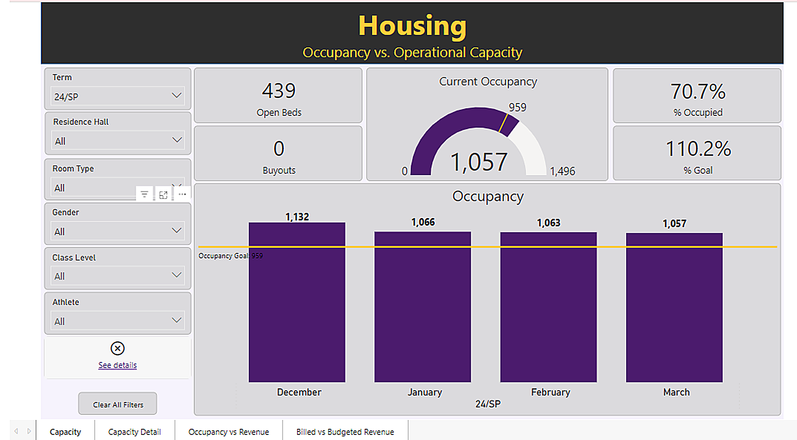
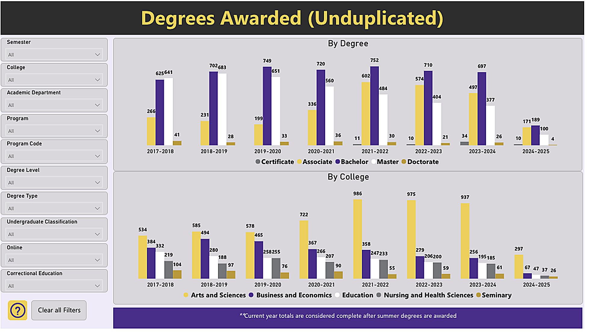
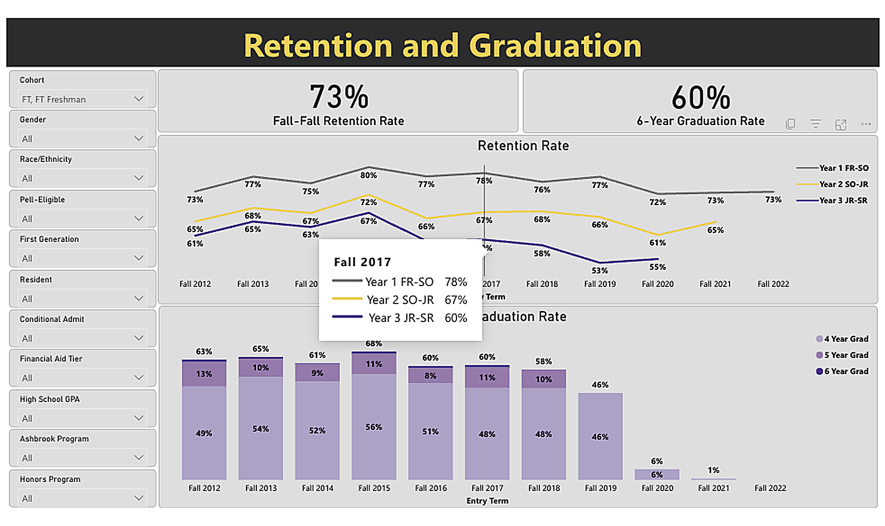
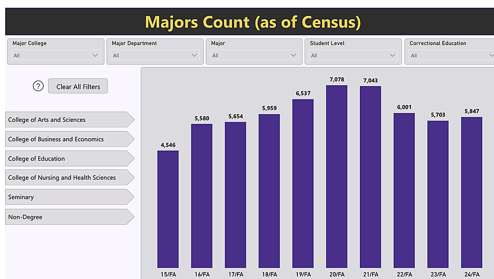
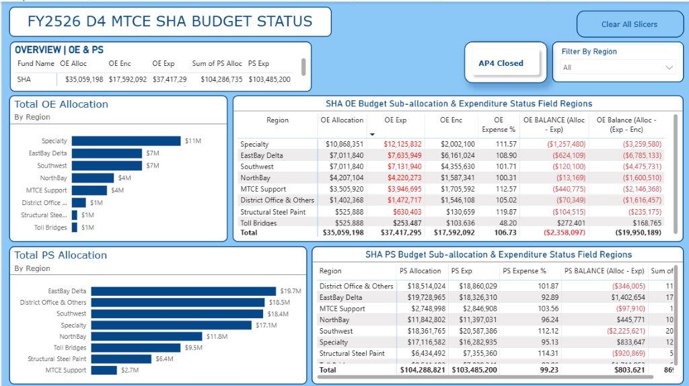
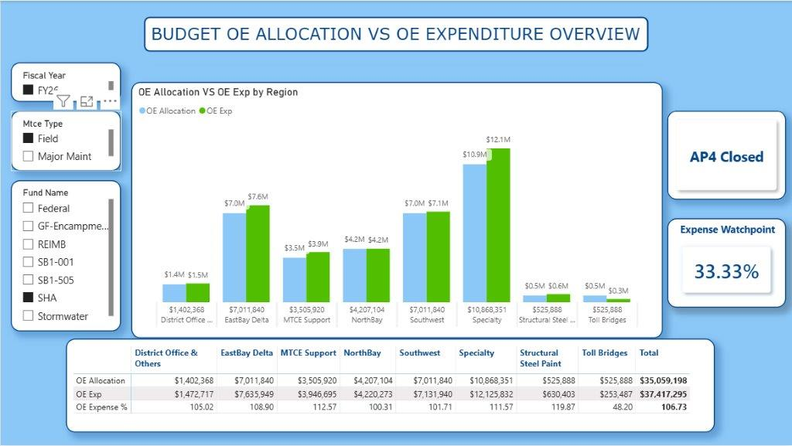
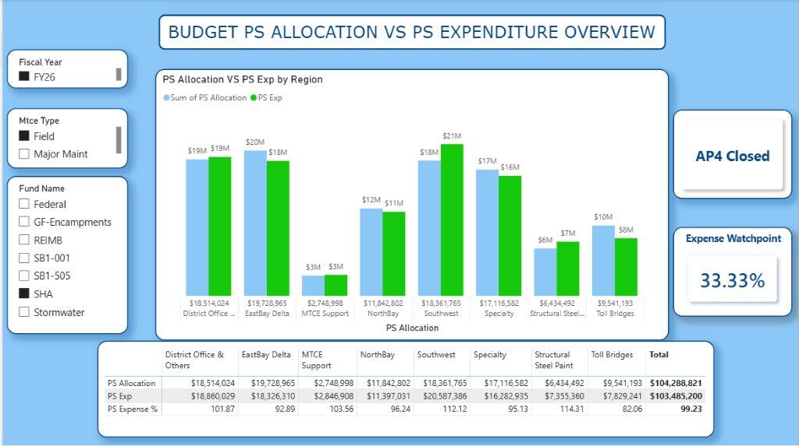
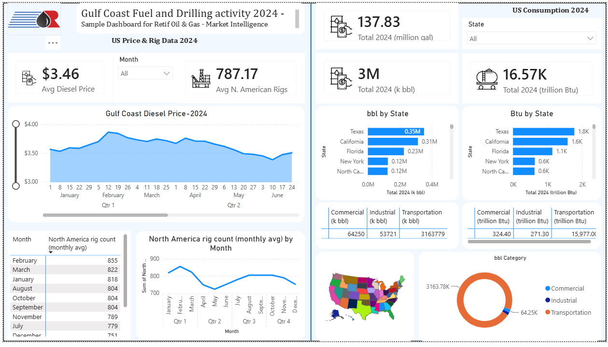

Six-plus years leading requirements gathering, process improvement, and stakeholder engagement across government, higher education, and financial services. I build Power BI dashboards end to end — facilitating workshops, modeling data in DAX and SQL, and turning open business questions into decision-ready analytics.
Turning business questions into requirements, data models, and dashboards across government, higher education, and financial services.
Real Power BI screenshots from Ashland University and Caltrans District 4, plus independent practice builds. Click any screenshot to view it full-size.
BI & Data Analyst — May 2023 to May 2025
Four Power BI dashboards built for academic affairs and residence life, analyzing 25,000+ student records to track housing occupancy, degree completions, retention/graduation, and program enrollment across the university.

Tracks residence hall occupancy against operational capacity by term. KPI cards and a radial gauge show current occupancy (1,057 of 1,496 beds) alongside a monthly occupancy-vs-goal trend.

Shows degrees conferred each year by level (certificate through doctorate) and by college, across eight academic years. Flags that current-year totals aren't final until summer degrees post.

Tracks fall-to-fall retention (73%) and six-year graduation (60%) by entering cohort. A stacked bar chart breaks graduation into 4/5/6-year completions, with deep filters for equity-gap review.

Census-date view of active majors per college across ten fall terms, from 4,546 up to a peak of 7,078, with a clickable college rail that cross-highlights the trend.
Analyst II — Jan 2026 to present
Three linked Power BI views tracking State Highway Account (SHA) budget sub-allocation and expenditure across every District 4 maintenance region for FY25/26, used by budget owners each accounting period.

Overview of OE and PS allocation, encumbrance, and expenditure by region, with detail tables that flag over-budget regions in red.

Drill-down comparing Operating Expense allocation vs. actual expenditure by region, with an "expense watchpoint" KPI for early warning before period close.

Same combo-chart layout scoped to Personnel Services — the view leadership checks first, since PS spend runs over $104M fund-wide, far larger than OE.
Independent build — market intelligence
A self-directed Power BI build modeled on a market-intelligence brief for Retif Oil & Gas, pairing upstream drilling activity with downstream fuel consumption on one page.

Pairs 2024 Gulf Coast diesel pricing and rig-count trends with U.S. fuel consumption by state and end-use category (commercial, industrial, transportation), plus a choropleth map and category donut.
What goes into building dashboards like these, end to end — from stakeholder workshop to shipped Power BI report.
Power BI (DAX, Power Query), Tableau, Power Apps, Power Automate — data modeling, calculated measures, and time-intelligence for cohort and fiscal-period analysis.
SQL, Python, R, Snowflake, advanced Excel, data mapping and profiling to turn messy source extracts into clean, dashboard-ready tables.
BRDs, user stories & acceptance criteria, requirements traceability matrix (RTM), gap analysis, root cause analysis, process mapping (BPMN), process reengineering.
Agile & Scrum, SDLC, UAT planning & execution, stakeholder management, workshop facilitation, change management.
JIRA, Workday, ARGOS, Banner, and AI-assisted automation for reporting and process improvement.
Filter and slicer design, KPI card layout, and visual hierarchy so non-technical stakeholders can self-serve answers.
Ashland University, Ohio — Beta Gamma Sigma Honor Society
Obafemi Awolowo University, Nigeria — Immunology & Virology